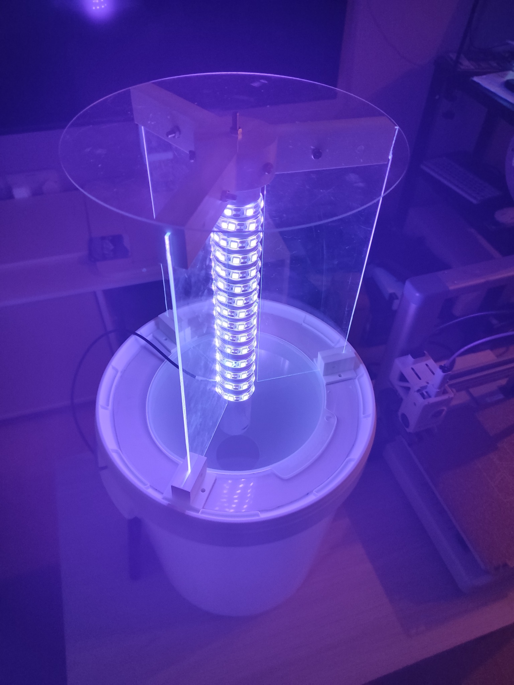
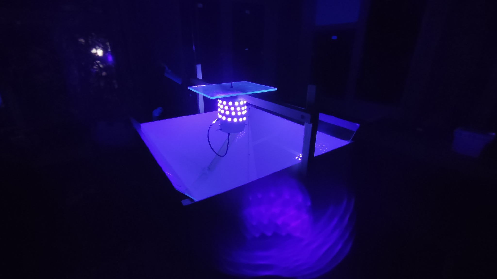

Design and size
Custom dimensions and trap layouts, including rigid and Skinner-style configurations, tailored to species, field conditions and sampling protocols.
WILDLIFE MONITORING
Portable, adaptable moth traps for field research and biodiversity monitoring
Enquire about this systemWHY CUSTOM MOTH TRAPS?
A wide range of commercial moth traps is already available, with different designs and light sources. Our aim is not to compete with established manufacturers. Instead, we focus on developing and adapting portable, affordable moth traps for specific scientific purposes, particularly where mains electricity or large, heavy car batteries are impractical.
Moth trapping and long-term monitoring help us understand moth diversity, changes in insect populations and the effects of environmental change. Collecting comparable data across more locations—including remote sites—often requires traps that are affordable enough to deploy in sufficient numbers and practical enough to transport and power in the field.
Custom dimensions and trap layouts, including rigid and Skinner-style configurations, tailored to species, field conditions and sampling protocols.
Configurations for mains electricity, portable batteries, power banks or solar-powered systems, selected according to light-source requirements and the intended operating time.
Mercury-vapour lamps where suitable, UV LED bulbs, UV LED strips and other research-appropriate illumination options, with attention to power consumption and practical field use.
Lightweight, modular construction where practical, with components that can be replaced, transported and adapted as research needs evolve.
OUR EXPERIENCE
We have experience designing and building moth traps for our own research, including rigid and Skinner-style traps tested on the Baltic Sea coast and in the United Kingdom. The photographs below show two examples of our experimental trap designs.


OPEN SCIENCE RESOURCES
Explore our published guides for examples of the traps we have developed and practical information on moth light-trapping techniques.
TAILORED TO YOUR EXPERIMENT
Tell us about your study site, target moths, required trap size, light source and available power. We can help develop a suitable portable configuration.